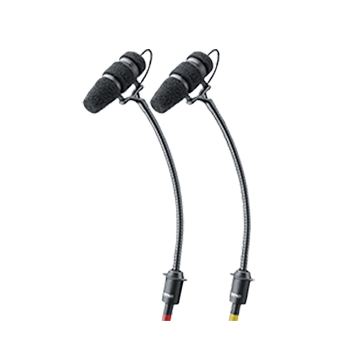
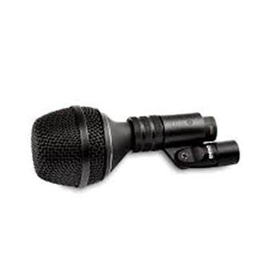
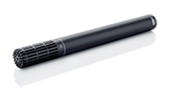
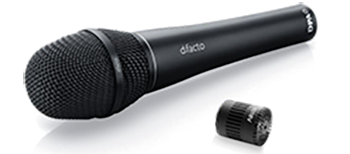
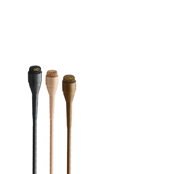
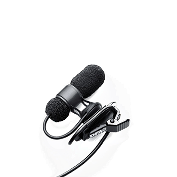

Headset
4066
Omnidirectional headset microphone
The 4066 is known for clean, transparent sound, strong headroom, and reliable performance in broadcast, theatre, lecture, and spoken-word environments.
Our Gear
Browse available DPA microphone rental inventory from VD Audio Rental for theatre, broadcast, touring, conferences, and live production.

Filter available DPA microphones by type below and contact us for availability, system compatibility, production support, and quote requests.
Request a QuoteSelect a category to view available DPA options.
Headset
Omnidirectional headset microphone
The 4066 is known for clean, transparent sound, strong headroom, and reliable performance in broadcast, theatre, lecture, and spoken-word environments.

Headset
Omni Flex headset and earset microphone
The 4166 combines the sound profile associated with the 4066 with a lightweight, flexible headset format that is fast to fit and comfortable to wear.

Headset
Flex directional headset and earset microphone
The 4188 pairs a directional capsule approach with DPA’s flexible headset system for spoken-word and vocal-performance applications that need strong intelligibility.

Instrument
Instrument microphone
The 4099 series is known for natural sound, strong isolation, and accurate capture of acoustic instruments in live and studio environments.

Instrument
Kick drum microphone
The 4055 is designed for kick drum and other high-SPL applications, giving engineers a less pre-shaped starting point and more control over final sound design.

Instrument
2011 Twin Diaphragm Cardioid Microphone
The 2011 Twin Diaphragm Cardioid Mic is a directional microphone. The distinctive sound of this microphone is well balanced. It bridges the gap between the extreme sound quality of our pencil microphones and our well-known Lavalier microphones.

Handheld
d:facto™ 4018V Softboost Vocal Microphone
The d:facto™ series brings true studio sound to the live stage and broadcasting studio. This version has a pre-programmed high-end boost has a 3 dB soft boost at 12 kHz. The modular nature of the d:facto™ series allows you to switch the capsule as well as the adapter, making it the most flexible vocal microphone available on the market.
Handheld
d:facto™ 4018VL Linear Vocal Microphone
The d:facto™ series brings true studio sound to the live stage and broadcasting studio. This version is extremely linear, engineered specifically for audio engineers who prefer setting their own unique impression on the final sound. . The modular nature of the d:facto™ series allows you to switch the capsule as well as the adapter, making it the most flexible vocal microphone available on the market.

Lavalier
Wireless clip-on and lapel microphone
The 4061 is commonly used in theatre and body-worn applications where discreet placement and reliable voice pickup are important.

Lavalier
Miniature cardioid microphone
The 4080 is a miniature cardioid lavalier designed for high definition voice capture, stronger side rejection, and focused performance in broadcast and live settings.